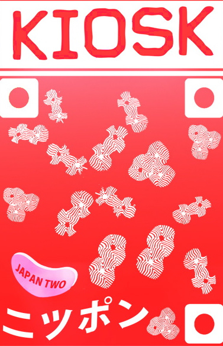

February 26, 2011 by mimecine
After heavy negotiations with certain configuration files on our system, the coalition of impossible bugs agreed to let the system do it’s thing again. Bans lifted, protesting loops and regular expressions all went home to see their families and let us go about our business again. Many thanks to all participating reboots, cups of coffee and heavy sighs. Keep an eye out for rogue elements – write me if you see them: marco@kioskkiosk.com and I’ll dispatch more coffe, sighs and possibly solutions for it.
- Comments closed
February 25, 2011 by mimecine
<img class="aligncenter size-full wp-image-2015" src="http://hello.kioskkiosk.com/wp-content/uploads/sites/4/2011/02/broken.jpeg" alt="" width="410" height="230" srcset="http://hello cialis gel.kioskkiosk.com/wp-content/uploads/sites/4/2011/02/broken.jpeg 410w, http://hello.kioskkiosk.com/wp-content/uploads/sites/4/2011/02/broken-240×135.jpeg 240w” sizes=”(max-width: 410px) 100vw, 410px” />
So, I was doing upgrades on our server, and must have broken a file or two (or really three), so the site is down for the moment. Will try to bring back as soon as possible! Sorry for the inconvenience!
- Comments closed
February 18, 2011 by Alisa

What I object to, is the ‘craze’ for machinery, not machinery as such. The craze is for what they call labour-saving machinery. Men go on ‘saving labour’ till thousands are without work and thrown on the open streets to die of starvation. I want to save time and labour, not for a fraction of mankind, but for all; I want the concentration of wealth, not in the hands of a few, but in the hands of all. Today machinery merely helps a few to ride on the back of millions. The impetus behind it all is not the philanthropy to save labour, but greed. It is against this constitution of things that I am fighting with all my might.
The supreme consideration is man. The machine should not tend to make atrophied the limbs of man.
-M. K. Gandhi
- Comments closed
January 23, 2011 by Alisa
 Hi
Hi
Before I check out to India I wanted to put one thing out there. We are considering offering classes at KIOSK in the space we recently took over from Areaware, our former roommates. So far I have two cooking classes and possibly one sewing class lined up. Would you like to teach a class? Do you know of a class you think we should hold? The concept is 2 hour to two day workshops. If you have some thoughts please pass them on! Thanks! Alisa
- Comments closed
January 22, 2011 by Alisa
Hello!
India is our next collection. I am going there to study at the Iyengar Institute but a collection will come out of the visit as Cara will be coming with to help make things happen. We will be in Mumbai and Pune, also traveling as recommended. If you have any suggestions of any sort we would love to hear from you. Will be in India the month of February and the collection should be here for March. Hoping all is well in 2011 for you and many thanks – Alisa
- Comments closed
December 12, 2010 by mimecine
How is it going? Are you in the Holiday Spirit?
We have been busy in the workshop over at
KIOSK. A few weeks ago our roommates moved out and our space has doubled in size. It was strange but we have gone a bit mad filling it and have created something of a Christmas bonanza / bazaar and a forest with bird sound. We have always loved the
Bamboo and Wooden Toys from Japan so we have a whole bunch,
Yuki’s Amazing Christmas Shop is bigger than ever, we have no idea how she does it, the
Swedish Polkagris are back for their annual visit as are
The Culp’s Holiday Lollipops and
Noa’s Calendar. Cara has created some
Xmas Birdies for your tree and those “What the heck to give oh why not
KIOSK Gift Kits” are ready to roll. As we all need a reminder at this time of year, please take the time to enjoy! One last thing, tomorrow is
Saint Lucia’s Day (they used to think it was the winter solstice probably due to the Julian calendar and just some common confusion) and in Scandinavia they wear candles on their head and make a bun called
Lussekatt – Marco’s mother’s recipe below – they are everyones favorite, you can bet what I am going to be doing late tonight! By the way they don’t wear the candles and make the buns at the same time.
Swedish Glögg and Baked Goods on December 15th from 3 – 7pm. So please stop by! My sister and I are baking.
This is a coupon for
15% off at KIOSK
until December 25 2010.
Here’s the practical information… once again until December 25th we are offering free shipping on online orders over $100 and above is a 15% off coupon for people who come into the shop. You can find us at 95 Spring Street every day until the 25th of December from 11 – 8pm. Yep, that’s right, we are open on Sundays now although not forever and since are around late we decided to be officially open an extra hour. Hope to see you soon and Happy Holidays!
Ingegerd’s Lussekatter:
1 stick unsalted butter
2 cups milk
2 packets of active dry yeast
a good pinch of saffron
1 cup of quark
1/2 – 3/4 cup sugar
1/2 tsp salt
6 – 6.5 cups plain white flour
1 egg whisked for glazing
How to make Lussekatter:
• Melt the butter in the pan. Pour in the milk and heat to lukewarm
• Put the yeast into a large baking bowl. Pour in the lukewarm milk and mix.
• Crush the saffron and a small amount of sugar together using a pestle and mortar. Add this, the quark, the rest of the sugar and salt to the bowl and mix.
• Add most of the flour and work the dough well until it no longer sticks to the sides of the bowl, stop adding flour when the dough is not longer wet and sticky
• Cover the bowl with a towel to let the mixture rise for 30-40 minutes (don’t leave it too long, as it will dry out).
• Sprinkle some flour on your baking surface and on your hands. Knead the dough lightly. When it’s no longer sticky, it’s ready to be separated and formed into Lussekatts which looks like a “S”.
Of the dough, roll strings about an inch diameter. Cut some 6-7″ long and twist the ends to a really ornate “S” (but where the ends of the “S” are really inside itself. You know, romantic “S” sorta). You’ll find yourself with two little “navels” where a raisin seems like a perfect fit. It is!
• Place on a baking tray, cover with a tea towel and allow to rise for 15 mins.
• Beat the egg and glaze the top of each lussekatt with a brush.
• Bake in the oven at 480 degrees F for about 8 minutes.
Eaten best a little warm still, and when no one looks, spread just a little bit of salted butter on it for some extra goodness.
- Comments closed
by Alisa


Live and in the jive at South Willard. A super store in LA. Thanks Ryan!
South Willard
8038 West Third St
Los Angeles CA 90048
Telephone (323) 653-6153
Open Mon-Sat 12-6
Sunday 12-5
- Comments closed
November 30, 2010 by mimecine

We got your stockings covered and warmed up! Easy-peasy (peecy / peacy / pizi ?) instant selection of stuff to stuff under $50, under $20, under $10 and under $5. Actually, you can probably figure out how to be more precise in price but I felt these links will get you started…. We got a revamped search too – it was actually that that got me started on this insta-cheap thing. But search, as handy as it can be is also pretty boring these days. Google does it better anyway.
More things are happening. If you come to the store (the physical!) you’ll see some of the changes that are happening! If we get around to it, expect some photos here.
We’ll try to make time for some sort of holydaypartay too, but nothing set in stone yet. Bye for now!
- Comments closed
November 3, 2010 by Alisa

Hi there
Ok, spank me, I have been really bad about making blog posts, but I will, starting now, try to be better
Japan 2 launched on October 21st and we well, of course we love it…hope you do too. Let us know your thoughts! Good and bad, why not! Just make it constructive pleazzze….
In: japan
- Comments closed
July 19, 2010 by Alisa
USA 3 is now out and about and behind a silver rain curtain at KIOSK.
Jiyoni made one heck of an animation for us! See still image here, see animation here.
Peanuts and Fireworks and Parades….

- Comments closed